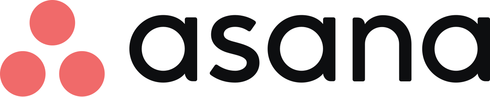

Experience
Software Engineer
August 2026 - Present
Just getting started — more to come.

Software Development Engineer
July 2023 - August 2026
My internship went well enough that I came back full-time after graduating.
I worked across two major systems. The first was Seller Event Aggregator, the ingestion
and orchestration layer for every financially relevant event in Amazon Stores — think 3.5B+
daily requests at 40k TPS globally. An event comes in, we collect the relevant data, then a
rules-based config determines which downstream systems to call and which code paths to run
before distributing into Accounting, Balance, and Seller Tool systems.
The second was the Fees platform — the configuration store and change management tools
behind $25B+ in fee changes a year. That config store is what execution services read from at
2.5B+ requests a day.
My favourite project was a testing framework that let us try fee changes in a sandbox
before they hit production. I also spent a stretch as the only North American engineer on a new
fee launch, coordinating with product managers in Europe and engineers in China. It ended up
generating $23M in additional revenue. Later on, two other engineers and I built a GenAI Slack
bot that answers seller fee questions. It won our team hackathon and placed top 10 at the FBA
GenAI Fair.
I was also on the on-call rotation, which meant getting paged when production broke.
That taught me more about diagnosing problems under pressure than anything else I did there.

Software Development Engineering Intern
May 2022 - August 2022
I spent the summer in Vancouver on the Automated Profitability
Management team, working on Automated Vendor Negotiations. Vendor Managers use the tool to
negotiate with vendors, and it sends 1000+ emails a day, more during annual negotiation season.
My project was replacing the existing email implementation with a generic, reusable
service. Two weeks of design, four weeks of building, and it shipped with detailed email metrics
on top.
Outside of work I became a regular at Amazon's pickup soccer games and spent the rest of
my time exploring Vancouver. Great team, great city — hard to beat for a first summer away.

Software Developer Intern
May 2021 - April 2022
My first job in software. I worked on a full-stack web application for
monitoring, visualizing, and predicting gas delivery data.
It was a great first look at real industry software — a mature, well-architected
codebase
with genuinely hard problems in it. I had two excellent mentors who taught me a lot about coding
practices and how the software development lifecycle actually works in practice.
I also joined a Community Social Responsibility project with the other interns. We
brewed an orange-flavoured kombucha and sold it to Arcurvians and friends, with all the proceeds
going to the Calgary Women's Emergency Shelter. The orange up there is Pip, our mascot. We
raised
over $4000.
I got lucky starting out at Arcurve. They invested real time in my growth, and I'd
recommend it to anyone getting into software development.